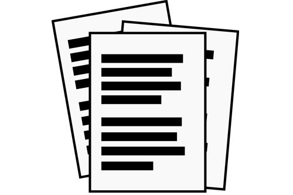
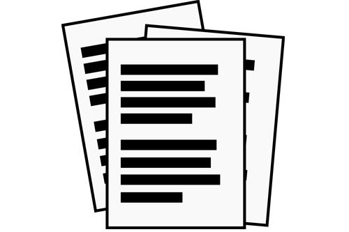

¿Qué es CSS? una página web es realmente un documento de texto. En dicho
documento se escribe código HTML, con el que se que crea el contenido de
una web. Por otro lado, existe el código CSS, que unido al código HTML
permite darle forma, color, posición (y otras características visuales)
a una página.
En resumen, se trata de un idioma como podría ser el
inglés o el alemán, que los navegadores web como Chrome o Firefox
conocen y pueden entender. Nuestro objetivo como diseñadores y
programadores web es precisamente ese: aprender el idioma.
Las siglas CSS (Cascading Style Sheets) significan «Hojas de estilo en cascada» y
parten de un concepto simple pero muy potente: aplicar estilos ( colores,
formas, márgenes, etc...) a uno o varios documentos (generalmente
documentos HTML, páginas webs) de forma masiva.
Se le denomina estilos en cascada porque se aplican de arriba a abajo (siguiendo un patrón
denominado herencia que trataremos más adelante) y en el caso de existir
ambigüedad, se siguen una serie de normas para resolverla.
el concepto de separación de presentación y contenido, intentando que los documentos
HTML incluyan sólo información y datos, relativos al significado de la
información a transmitir (el contenido), y todos los aspectos
relacionados con el estilo (diseño, colores, formas, etc...) se
encuentren en un documento CSS independiente (la presentación):
 +
+
 =

=

De esta forma, se puede unificar todo lo relativo al diseño visual en un solo documento CSS, y con ello